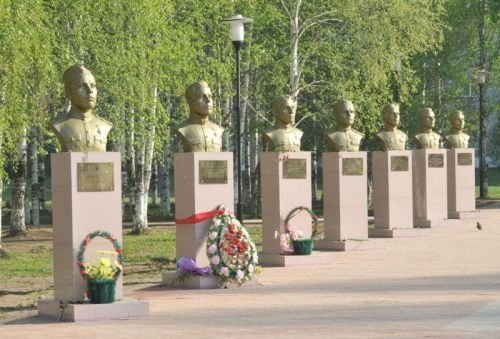 9 мая 2009 года состоялось торжественное открытие мемориального комплекса «Аллея славы», посвященного Героям Советского Союза и Кавалерам трех Орденов Славы, уроженцам района.
Изначально это задумывалось как проект главы района для участия в конкурсе социально-культурных проектов компании ООО «ЛУКОЙЛ-Пермь». Поддержка нефтяниками была оказана, но со временем идея приняла более широкий размах. Помимо установки скульптурной композиции была полностью реконструирована и Площадь Победы. Ее вымостили декоративной тротуарной плиткой, установили резные скамейки, провели монтаж нового уличного освещения.
В итоге общие затраты составили 5 миллионов 400 тысяч рублей, которые полностью легли на бюджеты района и городского поселения.
Право перерезать красную ленту и открыть мемориал было предоставлено представителям трех поколений чернушан - единственному ныне живущему Герою Советского Союза Николаю Степановичу Ведерникову, главе Чернушинского муниципального района Михаилу Шестакову, главе города Юрию Кислицину и председателю Молодежного парламента Александру Никитину.
Работали над бюстами скульпторы творческой мастерской члена Союза Дизайнеров России Вилура Шакирова.
Отныне и навсегда четырнадцать бронзовых Героев встали в один строй со своими потомками.
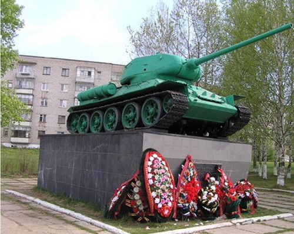 Памятник танкистам и артиллеристам Уральского добровольческого танкового корпуса. Памятники Чернушки. Открыт 30 июня 1983 года. Уральский добровольческий танковый корпус был сформирован в 1943 году. Его бойцами стали 15 наших земляков, в том числе и основатель Чернушинского краеведческого музея, Почетный гражданин города Чернушка Вячеслав Григорьевич Хлопин. Боевое крещение корпус получил на Орловско-Курской дуге, а закончил войну в Чехословакии. За отличные боевые действия, героизм, мужество и отвагу уральских добровольцев Москва салютовала им 27 раз. Спасибо вам за то, что стих повсюду рев орудий, За то, что хлеб и соль стоят повсюду на столе, За то, что просто радуются люди На вами отвоеванной земле.
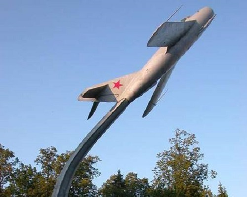 Открыт 15 августа 1982 года, в День Воздушного Флота СССР. В ноябре 1942 года в Чернушке открылась 2-я школа летчиков первоначального обучения ВВС ВМФ, а в деревянном бараке по ул. Ленина был размещен цех по ремонту самолетов УТ-2. Самолет для памятника достался Чернушке благодаря содействию знаменитого летчика Александра Покрышкина. На горе, у деревьев смолистых, Прикрывая весь город, завис «Ястребок», и наивный, и чистый, Снова ввысь он готов вознестись. Так бесхитростен, будто и не был На войне, что пробила века – Бороздил, будто ласточка, небо, На свиданья летал к облакам.
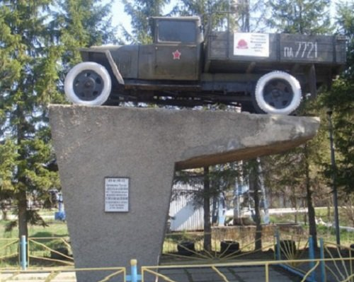 Установлен 15 августа 1982 года. Военный шофер Михаил Ефимович Горожанинов из д. Таныпские Ключи 24 июня 1941 года на своей полуторке ГАЗ-АА уехал на фронт. Боевое крещение получил под Смоленском, с боями добрался до Германии, вернулся с родной полуторкой на родину и еще 11 лет вместе с ней работал в колхозе. Служила бы легендарная полуторка и дальше, но в 1982 году за боевые и трудовые заслуги решено было поставить ее на пьедестал. Полуторки гремели по России. И мимо нас, летя во весь опор, Они такие песни проносили, Что мы поем те песни до сих пор. И мимо сел, дохнувших лютой стужей, От Ладоги до южной стороны Полуторки несли, борта натужа, Всю тяжесть навалившейся войны.
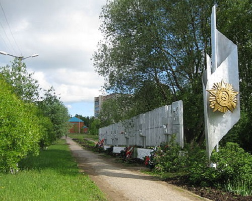 Памятники Чернушки. Стела открыта 9 мая 1985 года, автор проекта Г.М. Бахарев. Из нашего района на фронт ушли более 15 тысяч человек из 47 тысяч населения района. Потери из ушедших на фронт были велики: каждый третий из призванных в армию погиб, а всего за годы войны погибло 5 тысяч 157 наших земляков. На мемориальных плитах перечислены все фамилии погибших в боях за Родину. У фонтана я с папой гуляла, Там, где Вечный огонь и Солдат. И фамилию вдруг увидала – Папа тоже увидеть был рад. Он сказал: «Здесь фамилия наша Потому, что твой прадед Иван Воевал на войне очень страшной».
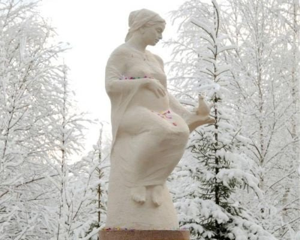 В преддверии Дня матери, 25 ноября 2008 года, в Чернушинском районе произошло действительно чудесное событие, к которому горожане готовились почти два года – была открыта скульптура будущей матери. Место для нее было выбрано символично – площадь перед перинатальным центром, которую теперь украсили резные скамейки и декоративные насаждения.
Данная задумка была воплощена в действительность благодаря конкурсу социально-культурных проектов, проводимому нефтяной компанией ООО «ЛУКОЙЛ-Пермь». Проект Михаила Владимировича Шестакова, главы Чернушинского муниципального района, «Благословите женщину» был признан лучшим в 2007 году. Именно тогда скульптор Рафаэль Сатиев приступил к работе – созданию скульптуры женщины-матери, на руке которой сидит голубь. Руководила проектом врач, заведующая детской поликлиникой Марина Александровна Антипина.
Реализация задумки растянулась на два года, потому что было принято решение перед памятником разбить небольшой сад-цветник, а площадь выложить плиткой. Отныне этот уютный уголок станет излюбленным местом отдыха чернушан.
Адрес: Россия, Пермский край, Чернушка, улица Нефтяников, 3
Адрес: 617830, Пермский край, Чернушинский р-н, г. Чернушка, бульвар 48-й стрелковой бригады, д. 1
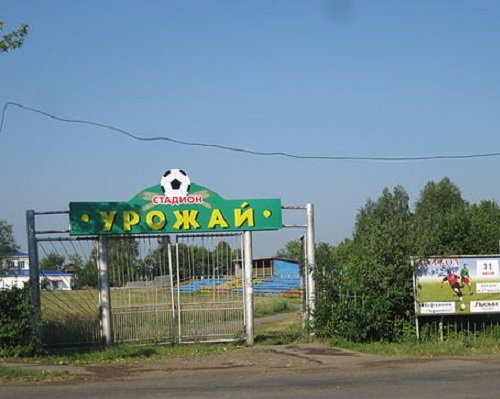 31 мая 2008 года стадион отметил своё 65-летие. Его открытие состоялось в грозном 1943 году игрой местной команды «Спартак» с командой воинской части, базирующейся в Чернушке.
Послевоенные годы вплоть до конца 60-х стадион в Чернушке был невероятно популярным местом досуга у чернушан. Здесь работали волейбольные, баскетбольная площадки, кстати, непременным лидером баскетбольных баталий был ученик школы №1 Пётр Михайлович Латышев – в 2003 году полномочный представитель президента в Уральском округе. На стадионе располагались и танцевальная площадка, качели, карусели, здесь проходили грандиозные праздники песни, где сводным хором руководил Леонид Леонгардович Мель.
В последние годы стадион радует хорошим состоянием футбольного поля - ровного и задерненного, а потому хорошо выдерживающего матчи чемпионатов. Команда «Нефтяник», ставшая восприемницей местного «Спартака», достойно продолжает традиции чернушинского футбола.
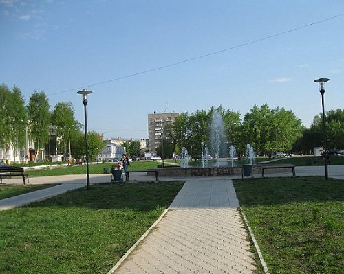 Главная достопримечательность самой новой городской площади появилась в 2006 году. Введён же полностью в эксплуатацию фонтан был лишь в 2007году. Инженером проекта стала Елена Михайловна Новосёлова. Совместными усилиями представителей пермских фирм и чернушинских подрядных организаций на площади расцвел настоящий «каменный цветок», который теперь всегда в теплое время года собирает вокруг себя и взрослых и детей.
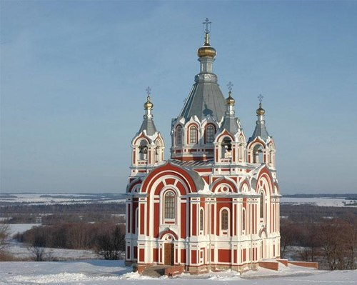 Закладка храма Николаевского завода во имя святителя и чудотворца Николая состоялась 8 июня 1854 года, а уже 14 августа 1860 года в присутствии многочисленных гостей и тысячной толпы прихожан архиепископ Пермский Неофит совершил великое освящение новоустроенной приходской Никольской церкви.
Архитектура храма, по-своему, уникальна и современной истории известны лишь два подобных архитектурных проекта: храм в Подмосковье и в Париже.
В 1937 году храм был закрыт. В 50-е годы в подвале храма было устроено хранилище картофеля. В это же время началась, в основном, утрата и богатого внутреннего убранства храма. С 70-х годов храм остался без какого-либо присмотра.
Величественное в прошлом сооружение, было подвергнуто варварскому разграблению и поруганию.
Во второй половине 80-х годов общественность начала открыто высказывать обеспокоенность состоянием этого замечательного памятника архитектуры. В результате в 1989 году было принято решение о постановке Никольской Церкви на государственный учёт как памятника архитектуры областного значения. Через год этот вопрос положительно решён и Облисполкомом. И только в 1992 году начались проводиться некоторые шаги по реставрации храма.
Лишь после обращения Настоятеля храма, тогда уже иеромонаха Амвросия (Носова) к руководству нефтяной компании «ЛУКОЙЛ-Пермь», было принято решение о финансировании и организации комплекса реставрационных работ по храму.
За небольшой исторический отрезок времени уже удалось сделать очень многое. Заново изготовлены и установлены 54 окна в храме, практически полностью заменена кровля на храме на новую, изготовлены и установлены новые входные двери, к монастырю проложена хорошая гравийная дорога, приобретено и установлено осветительное оборудование в храме.
Восстановлен исторический храмовый липовый парк, с сохранившимся на его территории «барским погостом». На месте разрушенного Казанского храма установлен Поклонный Крест, а место, чуть вдалеке от него, выделено под монастырское кладбище.
Как и почти полтора века тому назад, храм постепенно становится вновь центром духовно - административной церковной жизни юга Пермского Края.
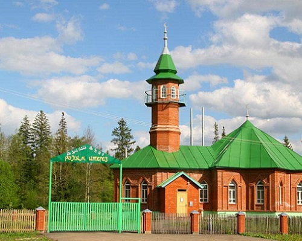 Строительство мечети в Чернушке началось с закладки в 1996 году Символического камня. Тогда районом руководил Виталий Константинович Прозоров. В своей предвыборной речи перед татаро-башкирским населением он обещал оказывать всяческую помощь в строительстве культурно-досугового центра для мусульман всего района. Эстафету принял молодой, энергичный Олег Алексеевич Хараськин. Как глубоко верующий человек, он взял под особый контроль и строительство мечети.
Перед руководителями, независимо от вероисповедания, была поставлена задача оказать любую возможную помощь. Почти 10 лет строилась мечеть. Огромную помощь оказали Хафизов Борис Гатинович, директор ОАО «Чернушкастройкерамика», Каримов Галиулла Гафиятович, директор ООО «СУ-4». Внесли большой личный вклад и кураторы строительства мечети - Гайфуллин Мударис, Зиганшин Файзылхан Тимершинович. И, наконец, 15 ноября 2004 года на великую радость всего мусульманского населения города и района торжественно была открыта мечеть.
В настоящее время проводится большая работа по изучению основ ислама и арабского языка, ежегодно проводятся религиозные праздники Ураза-байрам, Курбан-байрам (праздник жертвоприношения). Имам-хатибом местной мусульманской религиозной организации «Махалля» г.Чернушка и Чернушинского района является Нафиков Рустам-Хазрат.
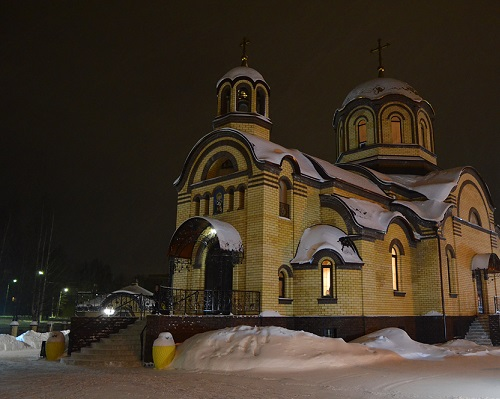 В 2011 году по благословению Митрополита Пермского и Соликамского Мефодия в городе Чернушка началось строительство храма во имя Святителя Спиридона, епископа Тримифунтского. Ход строительных работ курирует по благословению Владыки Мефодия благочинный храмов Чернушинского округа священник Сергий Пашкевич. 27 июня 2012 года Митрополит Пермский и Соликамский Мефодий посетил место и совершил чин освящения закладного камня храма. 25 декабря 2014 года, в престольный праздник, Митрополит Пермский и Кунгурский Мефодий совершил Чин Великого освящения храма.
Чернушка г., ул. Парковая
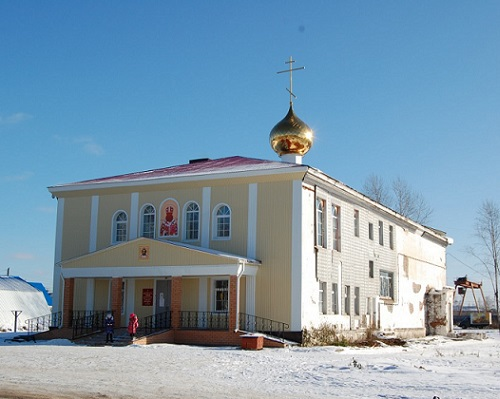 Храм в честь сщмч. Андроника, архиепископа Пермского и Кунгурского в г.Чернушка открыт в 1999 году в приспособленном здании бывшего кинотеатра «Луч» (построенного в 50-е годы ХХ века). Приписан к Свято-Никольскому женскому монастырю.
Адрес: Чернушка г., ул. Октябрьская, 2